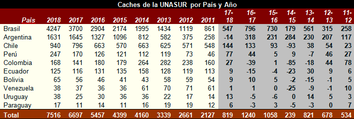

Informe Anual GA 2018
Por octavo año consecutivo, presentamos el Informe Anual de Geocaching Argentino 2018, con un total de 1645 cachés online al 31/12/2018.
Caches por Provincia
Por primera vez en la historia, hemos tenido una baja en la cantidad de cachés, esto es porque se escondió menos y se archivó más. La provincia que más cachés perdió fue Buenos Aires, manteniendo su segundo lugar, contra Córdoba que perdió un sólo caché.

Evolución Mes a Mes
En octubre del 2017 (marcado con color rojo) tuvimos el bum de caches por los conocidos “BC” (jugadores adolescentes nuevos que se sumaron al juego, por un video en youtube, sin tomarse un mínimo de tiempo en leer las reglas, terminando muggleando los caches existentes y escondiendo nuevos imposibles de buscar en su mayoría).
Ese fenómeno fue catastrófico principalmente para Argentina, frustró a muchos jugadores y por ello se ve la gran baja de escondidos en el 2018, bajando a niveles de hace varios años atrás. Ojalá el 2019 traiga una recuperación.

Evolución para el bloque UNASUR
Como decíamos en el informe reciente: El fenómeno de los BC, trajo un crecimiento negativo solamente para Argentina, mientras que los demás países siguieron con sus crecimientos. Por supuesto Brasil sigue siendo cada vez mas inalcanzable; Chile cómodo y seguro en el tercer puesto y la sorpresa de todo está en Per.


Caches por Autor y por Año (en forma acumulativa)
Geocacher Revelación: En 2013 fue grinpol (59 caches), 2014 arieltuc (48 caches), 2015 NicoEli92 (67 cachés), 2016 mac_y_mac (67 caches también).
Tanto para el 2017 como 2018 el “profe” Sosa se gana el shark de oro por haber escondido más cachés durante ese año, ganándole por un caché a mac_y_mac en cada año.

Novedades
Si bien el 2017 trajo la alegría de ser distinguidos por HQ con un souvenir para nuestro país y la tristeza que fueron los BB; el 2018 también trajo lo suyo, lo cual se merece mencionar
- Mejor Cache del 2018 Desde la comunidad geocachera salió elegido como mejor caché del año Paso Aguas Negras (GC7K1EM), escondido por niñogeo en lo que será un túnel que unirá el cono sur; Segundo puesto para el mistery Esperando La Carroza (GC7P1MF) de arieltuc basado en la película homónima. Tercero Plaza Embajada de Israel (GC7Y9MN) de rovilan que nos recuerda un suceso oscuro de la historia. Mención especial para La Posta de Yatasto (GC7VAYH) del profe Sosa que recuerda el supuesto encuentro entre el Gral San Martin y el Gral Belgrano en un momento álgido por la independencia.
- Caches de Hermanamiento:Como el geocaching es un juego de amistad y confraternidad, trasladamos la idea a otros países: Con geocachers extranjeros, escondemos caches en sus países, (en una calle argentina, o un monumento al Gral. San Martín, por ejemplo) ellos se hacen cargo de mantenerlos como gesto de confraternidad. (si alguien tiene un familiar o conocido en otro país, podría ayudarnos a esconder en nuevos países) Ya suman 24 cachés en todo el mundo.